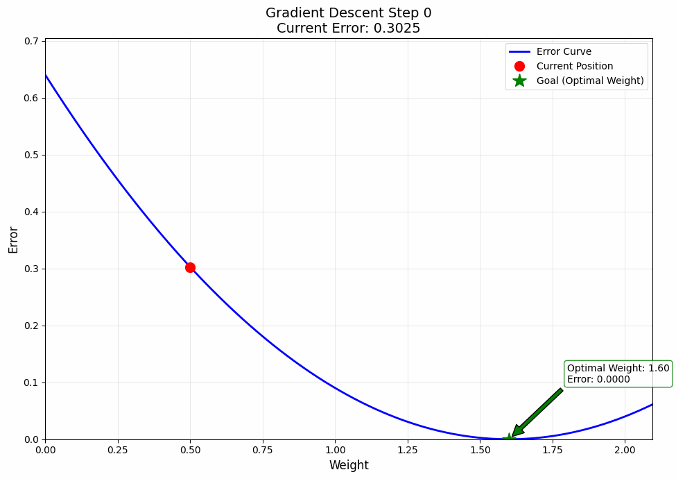
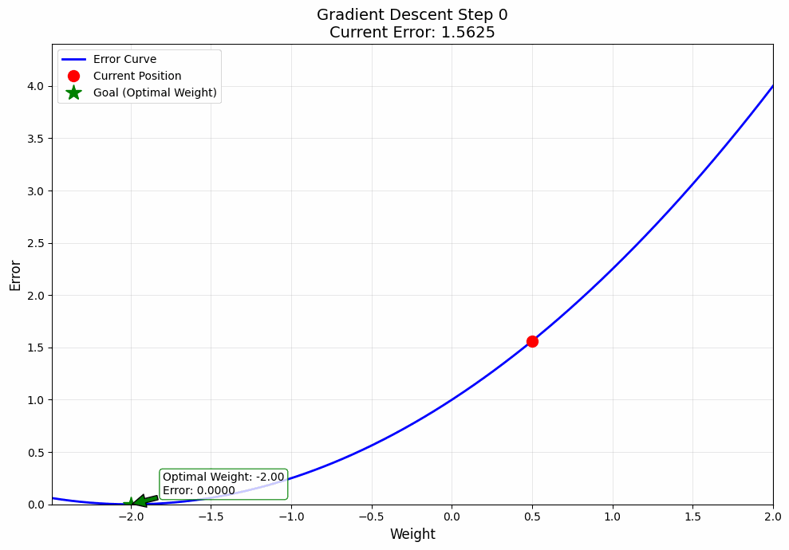
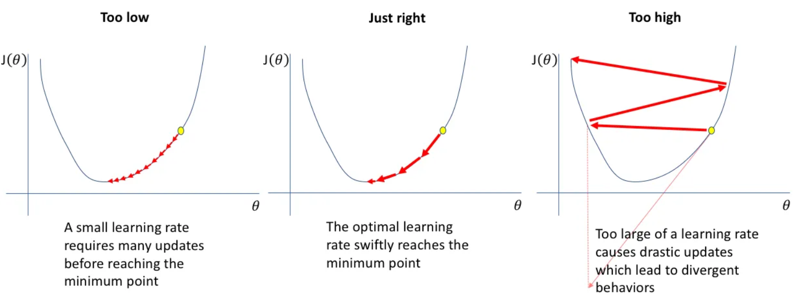
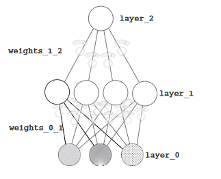

Alright, welcome back. We’re on Day 8, and now we’re stepping into the core of modern AI—Artificial Neural Networks.
If you’ve ever wondered how AI thinks, this is it. These networks, inspired by the human brain, power everything from image generation to game-playing bots. But here’s the thing—most people just accept them as black boxes. We won’t. We’ll break them down, understand their mechanics, and *really* see why they work.
Some parts might feel abstract. Some might challenge the way you look at data. That’s fine. If it were easy, everyone would be doing it. The key is to not just learn, but internalize. Because once this clicks, everything in deep learning will make way more sense.
So let’s dig in—neurons, activations, weights, and all.
How Neural Networks Actually Learn: A Simple Guide to Gradient Descent
Remember how our neural network:
1. Makes predictions (forward propagation)
2. Measures mistakes (loss function)
But how does it actually learn from these mistakes? Enter gradient descent!
Think of gradient descent like baking cookies. You’ve got a recipe, but your first batch of cookies isn’t quite right. They're either too soft or too crunchy. So, you want to adjust your recipe slightly to get the perfect cookie.
How it works?
- Starting point (Random Guess): You start with a random recipe. Maybe you guessed the baking time and temperature, but the cookies aren't perfect yet
- Bake the cookies (Make a prediction): You bake a batch of cookies with your initial recipe. When you taste them, you realize they’re not great (too soft, too crunchy, or not sweet enough). This is like the model making a prediction and seeing how wrong it is based on the loss function.
- Taste and Adjust (Find the gradient): Now, you analyze your cookies. You decide what went wrong—maybe the baking time was too short, or the temperature too high. This analysis is like calculating the gradient or the direction of change needed to fix things.
- Tweak the recipe (Update weights): Based on what you learned, you adjust your recipe. You lower the temperature or bake a little longer. This is the same as updating the model’s parameters (weights) to improve the prediction.
- Repeat: You bake another batch with the adjusted recipe, taste it again, and see if it’s better. If not, you adjust further and repeat the process. Each time, you make small adjustments to improve your recipe until you get the perfect cookie. This is the model learning through gradient descent, improving its predictions step by step.
So, just like you refine a recipe through trial and error to get the perfect cookie, the model uses
gradient descent to gradually adjust and improve its predictions! Let's write our first code to achieve
this.
baking_time=0.5 # Start with a guess for baking time (the weight)
oven_temp=0.5 # This is fixed (input) (this can be a variable as well, but let's imagine that you got a vision and now know the correct time)
perfect_cookie_score=0.8 # Our goal is to get this perfect score
adjustment=0.001 # Tiny changes we make to baking time each time
# Iteratively adjust baking time
for iteration in range(1101):
# Bake a batch of cookies
cookie_quality=oven_temp * baking_time # Prediction: how good are the cookies? (input * weight, as be discussed above, i.e., front propagation)
error=(cookie_quality - perfect_cookie_score) ** 2 # How far off are we? (MSE)
# Print current status
print(f"Error: {error} | Cookie Quality: {cookie_quality}")
# Test increasing baking time
try_up_quality=oven_temp * (baking_time + adjustment) # Try baking a bit longer
up_error=(perfect_cookie_score - try_up_quality) ** 2 # Error for baking longer
# Test decreasing baking time
try_down_quality=oven_temp * (baking_time - adjustment) # Try baking a bit shorter
down_error=(perfect_cookie_score - try_down_quality) ** 2 # Error for baking shorter
# Decide whether to bake longer or shorter based on smaller error
if down_error < up_error: # If shorter baking time gives better cookies
baking_time=baking_time - adjustment
elif down_error > up_error: # If longer baking time gives better cookies
baking_time=baking_time + adjustment
Error: 0.30250000000000005 | Cookie Quality: 0.25 Error: 0.3019502500000001 | Cookie Quality: 0.2505 Error: 0.30140100000000003 | Cookie Quality: 0.251 Error: 0.30085225 | Cookie Quality: 0.2515NOW THAT'S COOL!!! What makes this cool is that the program is like a little scientist experimenting to improve. Each iteration is a mini trial-and-error where it tweaks the baking time (weight) and sees if it gets closer to the goal. Over time, the changes become smaller as the error gets closer to zero, showing the power of gradual learning.
........... ........... ........... Error: 2.2500000000980924e-06 | Cookie Quality: 0.7984999999999673 Error: 1.000000000065505e-06 | Cookie Quality: 0.7989999999999673 Error: 2.5000000003280753e-07 | Cookie Quality: 0.7994999999999672 Error: 1.0799505792475652e-27 | Cookie Quality: 0.7999999999999672
But there might be some questions about the code, which I'll explain now.
Why Adjustments Matter?
The key to this process is the adjustments. Each time we test whether going up or down
improves the prediction, we only tweak the weight by a small amount (0.001). This keeps the process
stable and prevents wild swings that could
make things worse. Think of it as carefully fine-tuning your recipe rather than making drastic changes
that could ruin the cookies entirely.
The size of the adjustment, called the step
amount, controls how fast or slow the model learns:
- If the step is too large, you might overshoot the goal (e.g., burn the cookies).
- If it’s too small, it takes longer to reach the goal (e.g., 1101 iterations!).
You should try tweaking the step amount and you'll get a very nice intuition about this whole ordeal. And
please, you should. You can't learn without doing it yourself. And remember, coding when you understand
is fun. Moving on,
But why 1101
Iterations?
The reason we run the loop for 1101 iterations is because this number just gave the best output.
Trail and error basically. Early on, the error decreases quickly because the
model is far from the goal. But as
it gets closer to perfection, the adjustments become so small that the error barely changes. By 1101
iterations, the weight adjustments are no longer making a meaningful difference.
In real life, we rarely wait for exact
perfection. Instead, we stop when the error is good enough or when the improvement is too
small to matter(0.01 doesn't mean much depending on the context). This is why we end up with an
approximation rather than an exact result—because in practical applications, tiny differences are
usually acceptable.
But the Original Code is Inefficient.
The first code is cool but inefficient because:
- If-Else to Find the Direction: The program has to check whether going up or down improves the result by testing both directions. This is wasteful because it doubles the work for each iteration.
- Small Adjustments: While small steps are necessary for stability, they also make the process slower. With a better approach, we can calculate the exact direction and amount of adjustment in one go instead of guessing and checking.
This inefficiency becomes more noticeable when dealing with models that have millions of parameters.
Imagine running those checks for every single parameter—it would take forever!
Let's work with a better approach.
weight=0.5 # Initial guess for the weight (starting point/baking time)
input=0.5 # Fixed input (oven temperature)
goal_pred=0.8 # Desired prediction (perfect cookies score)
for iteration in range(20): # Loop for 20 iterations
pred=input * weight # Calculate prediction based on the current weight (forward propagation)
error=(pred - goal_pred) ** 2 # Calculate how wrong the prediction is (MSE)
direction_and_amount=(pred - goal_pred) * input # Gradient. It tells us how far off we are and in which direction to move
weight=weight - direction_and_amount # Update the weight based on gradient
print("Error:" + str(error) + " Prediction:" + str(pred))Output:
Error:0.30250000000000005 Prediction:0.25 Error:0.17015625000000004 Prediction:0.3875 Error:0.095712890625 Prediction:0.49062500000000003 Error:0.05383850097656251 Prediction:0.56796875 ........... ........... ........... Error:3.038685878049206e-05 Prediction:0.7944875723333098 Error:1.7092608064027242e-05 Prediction:0.7958656792499823 Error:9.614592036015323e-06 Prediction:0.7968992594374867 Error:5.408208020258491e-06 Prediction:0.7976744445781151That look only 20 iterations(low computation resources), so generate a pretty close approximation. Remember, it's not always about the working. It's also about how efficient you are.
But I know you've some questions. Let's address them.
direction_and_amount=(pred - goal_pred) * input- Direction: Should we increase or decrease the weight?
- If pred (current prediction) is high compared to goal_pred, the difference (pred - goal_pred) will be positive. This means we need to decrease the weight to bring the prediction down.
- If pred is too low compared to goal_pred, the difference will be negative. This means we need to increase the weight to bring the prediction up.
So, the sign of (pred - goal_pred) tells us the direction to move the weight.
- Amount: How much should we change the weight?
The amount of change depends on how big the difference is (pred - goal_pred) and the input value. If the input is larger, a small change in the weight will have a bigger effect on the prediction. So we scale the adjustment by multiplying with input.
weight = weight - direction_and_amount- Subtract the Adjustment: The gradient tells us which direction to move and by how much. Subtracting it ensures we’re moving in the correct direction to reduce the error.
- Keep Adjusting: Each iteration, this update makes the prediction a little closer to the goal. As the error gets smaller, the adjustments (the gradient) become smaller too, so we don’t overshoot (try increasing the step amount to something like a 50 and you'll know) the goal.
Let's see an example of how exactly does it work.
1. Prediction:
2. Error:
3. Direction and Amount:
The negative sign tells us to increase the weight (since the prediction is too low).
The magnitude (0.275) tells us how much to adjust the weight.
4. Weight Update:
Okay, but you might say, this is all cool and all, but can you make a visualization? The answer is Yes!


One more interesting thing to note. You can give it whatever input, and it'll find you an optimal choice. That's the beauty of Gradient Descent.And that's how out model learns. Give it enough time, and it'll even learn how to steal our jobs, Gasp.
Jokes aside, I want to tell you something important. What you just learnt; i.e., this process of learning by going backwards, this is what they call back propagation. And now you know it. If you need some time to digest this information, take it and maybe give it a re read or two.
Okay, I lied. I actually hid something from you. For the question above, I didn't use step_amount, aka., learning rate, which is pretty self explanatory in my opinion. The rate at which our model learns. Low means it will learn pretty slowly and will require higher iterations to run. High? It overshoots, and you never receive your optimal value.

Well, you can imagine the third case happening if you set the LR(learning rate) too high. To give you an
intuition,
weight -= grad * learning_rate- Goal=0.5
- Input=50
- Initial weight: weight=0.5.
- Learning rate: learning_rate=100 (too high).
1.
Initial Prediction:
2. Loss (MSE):
3. Gradient:
4. Weight Update (with learning rate=100):
This results in a massive update to the weight.
Okay, now you know. Let me tell you something some of you might be wondering.
What exactly is gradient?
I'll talk about calculus, but you better not run away. Believe me, you can do so. It's easy. Incredibly easy. And you don't need to know calculus. Even I didn't when I first learnt this.
Okay, you all already know what's the role of gradient. It gives us the direction and the step size.
Think about a function like f(x)=x² + 2. At any point x, the gradient tells us something very simple: if you increase x by a tiny bit, will f(x) get bigger or smaller, and by how much?
That's really all a derivative is - it measures exactly how much the function will change when you make a tiny change to x.
When people first learn gradient descent, they often ask: Okay, I get that I'm following the gradient downward... but why does this actually work? Why don't I get stuck somewhere random?
Imagine you're at some point x. The gradient tells you two crucial things:
1. Which direction will make your function smaller
2. Exactly how much smaller it will get (if you take a tiny step)
When we say take a tiny step in the opposite direction of the gradient(as we minus the terms), we're using this information.
This is cool because you are mathematically guaranteed to decrease the function's value. This isn't just a helpful trick - it's a mathematical certainty that comes from the properties of derivatives.
This explains why gradient descent works: each time we compute a gradient and take a step, we're using this mathematical guarantee of improvement. The only catch is ensuring our step size (learning rate) is small enough.
And yeah, that's it. I only wanted to give you an intuition. If you're interested, maybe you can find a good tutorial, or in the end, I will give some referneces I used, but I can't possibly remember every source.
And one more thing, in here, we were just trying to find 1 weight value, but in reality, we can find as many weights as we like.
Let's learn via an example.
Imagine you're standing at a street corner in a foreign country. As you approach the intersection, you notice the streetlight system is different from what you're used to. How do you know when it's safe to cross the street?
At first, it's unclear. You don't know how to interpret the different light combinations. Which signals
mean go? Which mean stop? To solve this, you decide to observe the light patterns and see
if you can identify any correlation
between the lights and whether people around you choose to walk or stop.
Somehow similar to how our model learns. But this time it's different, with multiple inputs.
But our model doesn't undersatnd sign language, so we instead give it a matrix.
So 1 for every signal, and 0 for every dead signal.
For those of you who don't know matrix (not the movie), it's just some numbers arranged neatly in a
box. And computers are great at calculating with matrices.
And just as a reminder, the streetlight patterns can be represented by anything, even decimals like
0.1 0.4 0.5, provided they're of varying intensity etc. It just helps capture more information
Okay, let's write some code.
import numpy as np
weights=np.array([0.5, 0.48, -0.7]) #For every input, we've a different weight
lr=0.1
streetlights=np.array([ [ 1, 0, 1 ],
[ 0, 1, 1 ],
[ 0, 0, 1 ],
[ 1, 1, 1 ],
[ 0, 1, 1 ],
[ 1, 0, 1 ] ]) #1 is on, 0 is off
walk_vs_stop=np.array([ 0, 1, 0, 1, 1, 0 ]) #actual results. corresponds with the streetlights. eg: 0 means stopped, so people stopped at 1,0,1
for iteration in range(40):
error_for_all_lights=0
for row_index in range(len(walk_vs_stop)): # Loop through all the rows of the streetlights (each row is one data point)
input=streetlights[row_index] #Get the input features (streetlight pattern) for this data point. eg, streetlight[0] gives 1,0,1
goal_prediction=walk_vs_stop[row_index] # Get the goal prediction (whether people walk or stop) for this data point. walk_vs_stop[0] is 0
prediction=input.dot(weights) #matrix multiplication for forward propagation(earlier we were just multiplying) (1,3) x (1,1)=(1,1) sizeof matrix
error=(goal_prediction - prediction) ** 2 #MSE
error_for_all_lights += error
direction_and_amount=(prediction - goal_prediction) * input #we get our error (1,1) - (1,1)=(1,1) x (1,3)=(1,3) size
weights -= (lr * direction_and_amount) #calc weights 1 x (1,3)=(1,3)
print(f"Prediction: {prediction}")
print(f"Error: {error_for_all_lights} \n")
print(weights)Output:
Prediction: 0.17552
Error: 2.6561231104
Prediction: 0.26700416768
Error: 0.9628701776715985 ........... ........... ........... Prediction: -0.0028012842268006904
Error: 0.0006143435674831474
Prediction: -0.0026256193329783125
Error: 0.00053373677328488
[ 0.01389228 1.0138147 -0.01599277]
As you can see, our error became quite low, which is nice. If any of you got confused with the size, I highly recommend learning basic matrix multiplication. It'll help you a ton.
Okay, so long, we only got the weights, but let's do something fun. Let's actually predict.
import numpy as np
weights=np.array([0.01389228, 1.0138147, -0.01599277])
new_streetlights=np.array([
[1, 0, 1], #should be 0
[0, 0, 1], #should be 0
[1, 1, 1], #should be 1
])
for new_input in new_streetlights:
prediction=new_input.dot(weights) # Calculate the dot product of new input and weights
# If the prediction is closer to 1, we consider it as "walk", else "stop"
if prediction >= 0.5:
print("Prediction: Walk (1)")
else:
print("Prediction: Stop (0)")
print(f"Prediction Value: {prediction}\n")Output:
Prediction: Stop (0) Prediction Value: -0.00210049 Prediction: Stop (0) Prediction Value: -0.01599277 Prediction: Walk (1) Prediction Value: 1.01171421
I'd say it's smarter than me. Ahem. Also, if you're wondering why we looped 2 times, it's because
we had multiple inputs. You'll see more sophisticated techniques moving on forward. Moving on,
We Got Lucky with Our Dataset, but Complexity Rises
with Larger Data
In our toy problem, we got lucky because the dataset was small and simple. Our neural network could
easily learn the patterns. However, in real-world scenarios, we often deal with much more complex data.
Instead of clear patterns like
the streetlights, we might need the network to detect much subtler correlations. This is where more
advanced neural structures come into play, like additional hidden layers(the node like things.
More of them=more weights),
activation functions, and non-linearities.
Esentially we'd need something like;

Don't get intimidated. It's pretty simple. Just think of layer 1 as our input layer. What I mean to
say is, layer 0 is our true input. And they go to layer 1, while the weights learn some basic
features of the input. Then some things
happen, and instead of predicting, we act as if the weights * input from layer 0, is actually the new
input, which will pass through the weights_1_2. The idea is that if we add more layers, the model can
better understand our input. I'll
talk about it when we're discussing CNNs.
But there's a catch. If you tried to train our three-layer network as is, you'd run into a problem.
Here's why: for any two consecutive weighted sums of the input, there exists a single weighted sum that
behaves exactly the same way. Okay,
I know you didn't undersand this, but in simpler terms - anything our three-layer network can do, a
two-layer network can also do. So what's the point of the middle layer?
Why the Middle Layer Doesn't Work Yet?
Imagine the middle layer of our network as people trying to give advice. Right now, these people are
just repeating bits of what they hear from others (the input layer). They’re not adding any new ideas or
making any decisions of their
own.
For example, if the left input says 0.3, the middle layer might just repeat, Okay, I’ll
also say 0.3, or maybe, I’ll say 50% of that, so 0.15. The problem is that the middle
layer is just echoing the inputs—it’s not
creating anything original or useful. It’s stuck being a mix of the same signals coming from the inputs.
This means that our network isn’t really learning anything new by adding the middle layer. It’s just
making the same guesses that a simpler network could have made.
How to Fix the Middle Layer?
What we need is for the middle layer to think for itself. Instead of blindly following the inputs
all the time, it should be able to decide:
- When to listen to an input.
- When to ignore an input.
This would let the middle layer make smarter decisions and come up with better patterns. For example, it
might decide:
- I’ll pay attention to the left input, but only if the right input isn’t active.
- I’ll stay quiet if the signal is confusing or irrelevant.
The Secret: Turning Off Nodes
To let the middle layer decide when to listen and when to stay quiet, we use a simple rule:
If the node’s value
would be negative, turn it off (set it to zero).
Think of it like this: if someone says something negative or unhelpful, you ignore them (turn them
off). This way, the middle layer isn’t stuck always listening to everything—it can pick and choose when
to pay attention.
This turning-on-and-off process is called nonlinearity, and the specific rule we use (turning off
negative values) is called ReLU (Rectified Linear Unit). It’s a super simple tweak—just setting
negatives to zero—but it changes
everything.
Without ReLU, the network is like a bunch of gears that can only spin in straight lines. With ReLU,
the network becomes flexible and can adapt to much more complex data.
Let's write a code with our newfound learnings.
import numpy as np # Importing NumPy for mathematical operations
np.random.seed(1) # Setting a random seed for reproducibility, you can ignore if you want
# Define the ReLU activation function: outputs the value if it's positive, otherwise outputs 0
def relu(x):
return (x > 0) * x # If x > 0, keep it; otherwise, make it 0. We won't entertain any negativity. (max(0, x))
# Define the derivative of ReLU: 1 if output > 0, else 0
def relu2deriv(output):
return output > 0 # 1 if > 0, else 0
streetlights=np.array([[1, 0, 1],
[0, 1, 1],
[0, 0, 1],
[1, 1, 1]])
walk_vs_stop=np.array([[1], [1], [0], [0]])
lr=0.2
# Size of the hidden layer (number of neurons in the middle layer)
hidden_size=4
# Initializing weights randomly between -1 and 1
# weights_0_1: connects input layer to hidden layer
weights_0_1=2 * np.random.random((3, hidden_size)) - 1
# weights_1_2: connects hidden layer to output layer
weights_1_2=2 * np.random.random((hidden_size, 1)) - 1
for iteration in range(60):
layer_2_error=0 # Tracks the total error in this iteration
for i in range(len(streetlights)):
layer_0=streetlights[i:i+1] # Input layer: one row of data (1x3 matrix)
layer_1=relu(np.dot(layer_0, weights_0_1)) # Hidden layer: apply weights and ReLU activation
layer_2=np.dot(layer_1, weights_1_2) # Output layer: apply weights to hidden layer
# Calculate error for the current example
layer_2_error += np.sum((layer_2 - walk_vs_stop[i:i+1]) ** 2)
# Calculate how much to adjust the output layer weights
layer_2_direction_and_rate=(layer_2 - walk_vs_stop[i:i+1]) # Difference between prediction and actual value
# Calculate how much to adjust the hidden layer weights
layer_1_direction_and_rate=layer_2_direction_and_rate.dot(weights_1_2.T) * relu2deriv(layer_1)
# Pass error backward through the weights and use ReLU derivative to decide how much to change
# Update weights: adjust by the error scaled by learning rate
weights_1_2 -= lr * layer_1.T.dot(layer_2_direction_and_rate) # Update weights from hidden to output layer
weights_0_1 -= lr * layer_0.T.dot(layer_1_direction_and_rate) # Update weights from input to hidden layer
# Every 10 iterations, print the total error
if iteration % 10 == 9:
print(f"Error: {layer_2_error}")
Error: 0.6342311598444467 Error: 0.3583840767631751 Error: 0.08301831133032973 Error: 0.006467054957103672 Error: 0.0003292669000750735 Error: 1.5055622665134864e-05
You can make predictions if you want. I'll skip that for now.
Time to address some questions you guys might have.
Let's break this down very simply:
What is relu2deriv(output)?
The relu2deriv(output) function is the derivative (or slope) of the ReLU function. This
returns True (which is treated as 1) if output is greater than 0, and False (which is treated as 0)
otherwise.
Before you get scared by reading the word derivative, I'll quickly explain the simple math behind
it.
The ReLU function is:
The derivative (or slope) of ReLU is:
- 1 when
. (slope 1)
- 0 when
. (slope 0)
Remember what I told about calculus? It measures how much y changes, depending on how much x changed.
Similarly, when we say the slope is 1, it means when x increases by 1, y also increases by 1. That's it. In schools, you might have read it as, derivative of x dx is 1.
And, if the slope is 0, it means no matter how much x changes, y stays the same. Again, as we say, derivative
Mathematically:
This is exactly what relu2deriv(output) does. It checks if the output (the result of applying ReLU) is greater than 0 and returns 1 or 0.
Okay, but why do we need this?
When training a neural network, during back propagation;
For ReLU:
- If the output is greater than 0, the slope is 1 (so it allows weight adjustments).
- If the output is less than or equal to 0, the slope is 0 (meaning the neuron is inactive and no weight adjustment is made for that input).
This combination ensures the network learns effectively while being computationally efficient.
And just as I promised, I told you about activation functions. And ReLU is the public favourite. Any
other, I'll teach as they come.
Okay, now we have finished talking about predict, compare, and
learn.
One more thing I never talked about, and that is the types of Gradient
Descent.
Let's start,
Gradient Descent has three popular flavors: Batch,
Stochastic, and Mini-Batch. They all aim to adjust the model's parameters to reduce error, but
they differ in how much data they use for each update.
1. Batch Gradient
Descent
- What it does: Takes all the data, calculates the gradient (slope), and updates the
model’s parameters once per iteration.
Imagine you’re a chef making a soup. You taste the entire pot of soup, figure out what’s missing (too salty? too bland?), and adjust the seasoning. - Pros:
Smooth and stable updates because you’re using all the data.
Works great when the dataset is small and fits in memory. - Cons:
Slow if the dataset is huge—imagine tasting a soup that’s the size of a swimming pool! The same way, can't handle if your RAM/GPU is 16 GB worth, and you need to use 1 TB worth of data.
2. Stochastic Gradient Descent (SGD)
- What it does: Instead of looking at all the data, it picks one random data
point at a time, calculates the gradient, and updates the model immediately.
You’re still the chef, but now you taste a single spoonful of soup. Based on that, you decide how to adjust the seasoning, even though it might not represent the entire pot (the salt may only be at the top and not reached the bottom, etc.).
Up until now, we were working with SGDs. - Pros:
Much faster because it updates after just one data point (less math, in Batch GD, we needed to work with millions of data points).
Useful for huge datasets where you can’t use all the data at once. - Cons:
Noisy updates because one data point might not reflect the overall trend. Jus because there's salt at the top, doesn't mean there's salt at the bottom.
Can take longer to converge because there can always be an anamoly (like how in normal distribution, there are some extremes).
3. Mini-Batch Gradient Descent
- What it does: A hybrid of the two above. Instead of using all the data or just one data point, it
uses small chunks (batches) of data at a time.
You’re now tasting a small bowl of soup from the pot. It’s a more balanced way to decide the seasoning—it’s not as slow as tasting the whole pot, but it’s less random than just one spoonful. - Pros:
Faster than Batch GD and more stable than SGD.
Works well for training large models with large datasets. - Cons:
You need to choose the batch size carefully—too small, and it gets noisy like SGD; too big, and it slows down like Batch GD.
That's it for ANNs.
CONGRATULATIONS!!!
And there you have it, folks—our journey through the brainy
labyrinth of artificial neural networks (ANNs). From weighted connections to activation functions,
we've peeked under the hood of how machines try to mimic the learning process of our very own
brains.
Remember, building and understanding ANNs isn’t about getting lost in fancy
algorithms or mind-boggling equations. It’s about breaking down the magic into simple, logical
steps—like how adjusting weights can make a machine learn. Sure, at first, it feels like a
lot (and it is), but with every iteration, just like the network itself, you learn
too.
So pat yourself on the back—you’ve just connected some neurons of your own! The
best part? This is just the beginning of what you can create and discover. Go out there, and learn
more. I just taught you the very basics, there's a lot more to learn!
Now do
re-read the
whole thing again. Until you can understand every concept. Take a pen
and paper; and make notes. Revise. And remember, nothing is tough. You
just need to have the hunger for knowledge.
If you found this content helpful and would like to support, feel free to contribute. Your support isn’t just a donation—it’s a step toward building something bigger, together.
Donate via PayPal